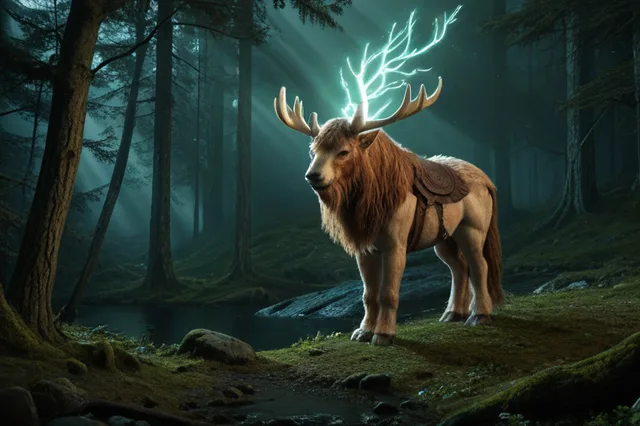

Аурубла
Аурубла (Auðumbla) — первозданная корова, лизавшая лёд
Auðumbla
Аудумбла — первозданная корова, возникшая из тающего льда в Нифльхейме. Из её сосков текло четыре реки молока, которыми она кормила Ймира. Сама она питалась, обликая солёный лёд.
Происхождение: Первозданный лёд Нифльхейма
Германическое имя: Auþumêlô
Роль: первозданная корова, лизавшая лёд
Семья
- Создала: Борр (лизала лёд три дня)
Легенды
- Первый день — из льда появилась голова человека
- Второй день — появилась голова и плечи
- Третий день — весь человек (Борр) был создан
Источники
Прозаическая Эдда, Младшая Эдда
ᚱ